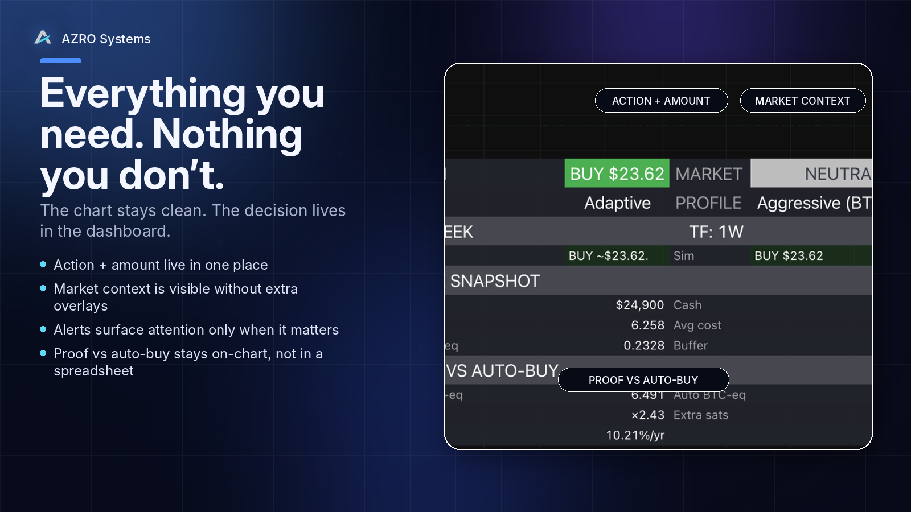
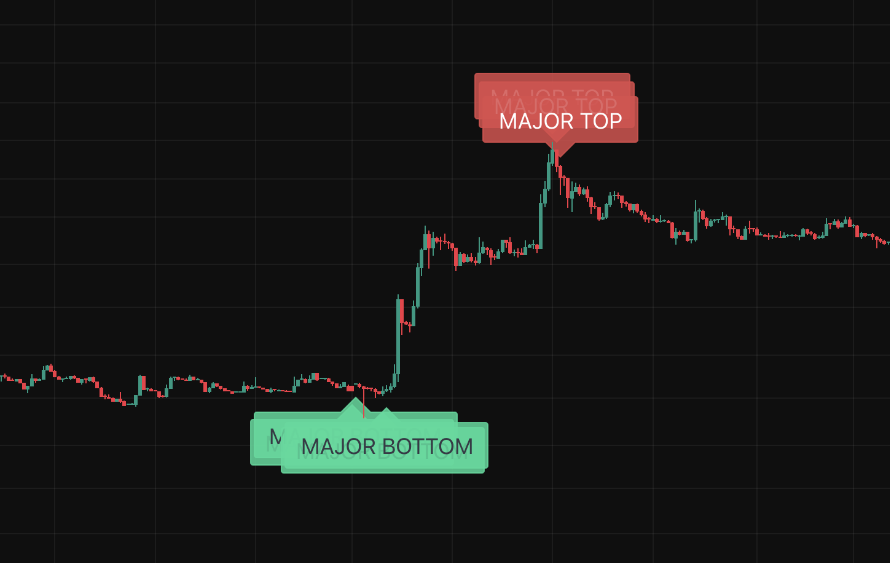

Features built for disciplined execution.
Two tools, one rules-first mindset: weekly clarity, readable outputs, and a workflow you can actually follow.
BTC Operating System features
What makes the BTC Operating System feel different without changing the clean AZRO layout system.
BTC Operating System features
What makes the BTC Operating System feel different without changing the clean AZRO layout system.
A cycle-aware Bitcoin allocation process.
Turn volatility into one clear weekly process built around one decision, one suggested amount, and accountability that stays on chart.
One clear weekly output
BUY / TRIM (optional) / HOLD + a suggested amount sized to your plan.
Dashboard-first
The chart stays readable because the decision lives inside a clean dashboard.
Modes + risk profiles
Stack, Adaptive, Event, and Performance with Conservative, Balanced, and Aggressive operating styles.
Proof vs auto-buy
BTC-eq, extra sats, and accretion keep the process accountable versus a simple auto-buy baseline.
Non-custodial
No keys, no exchange connections, and no auto-trading — you stay in control of execution.
Built like an operating process
Maintained logic, versioned updates, and guardrails designed to stay dependable across cycles.

XRP Top/Bottom Detector features
The same clean layout system, but centered on readable on-chart confirmations for XRP.
XRP Top/Bottom Detector features
The same clean layout system, but centered on readable on-chart confirmations for XRP.
Cycle confirmation labels for XRP.
A proof-first weekly workflow built around readable confirmations, optional context, and alert-ready structure.
Weekly-close confirmations
MAJOR and RADAR confirmations are designed to trigger on the weekly bar close (1W) — helping you make cycle-level decisions without staring at the chart.
EARLY + LIGHT context (optional)
EARLY labels can print intra-week as an early context layer; LIGHT labels add timing visibility between major turns. Leave them on for awareness, or turn them off for a cleaner, confirmation-only chart.
Risk context overlays
RISK and HIGH-RISK triangles add a conservative context layer. Optional controls can add a risk-colored XRP price line and market-context risk markers.
Designed for disciplined execution
Built for process, not prediction: confirmations at the weekly close, optional soft-confirm filtering, and quality-of-life controls that reduce noise and stress.
TradingView-native workflow
Install on TradingView, set alerts once, and follow your written plan. The script is distributed as an invite-only TradingView indicator after purchase.
Docs-first onboarding
Clear docs for setup, alerts, and disclosures. Start with the recommended baseline, then customize only after you’ve validated the workflow.
